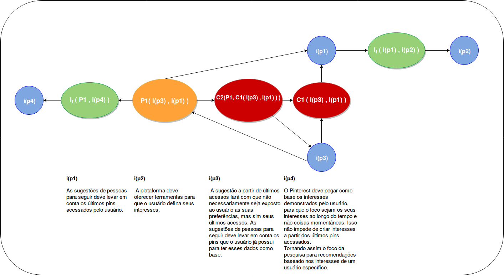
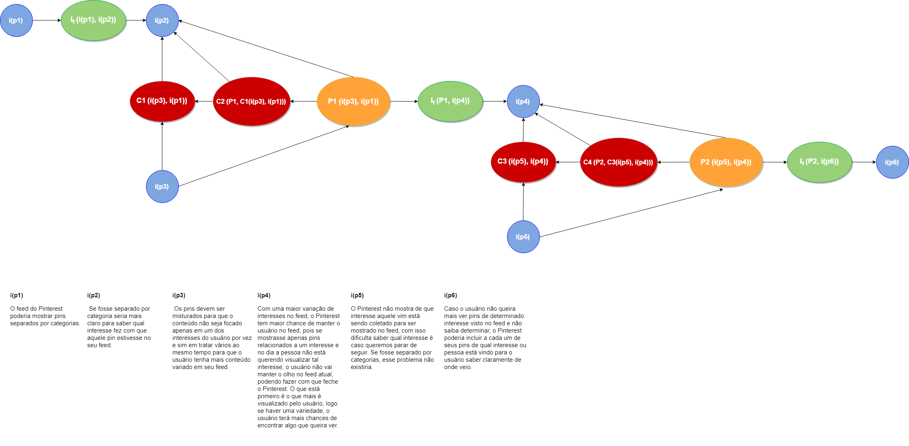
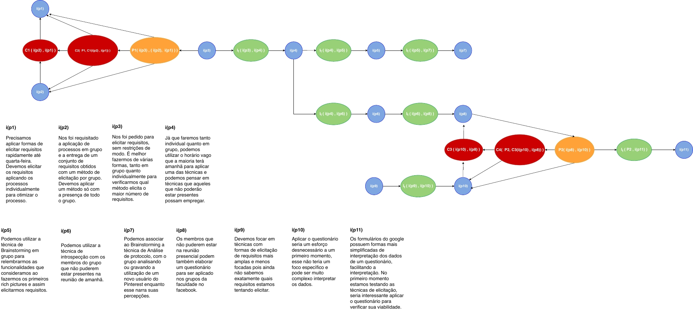
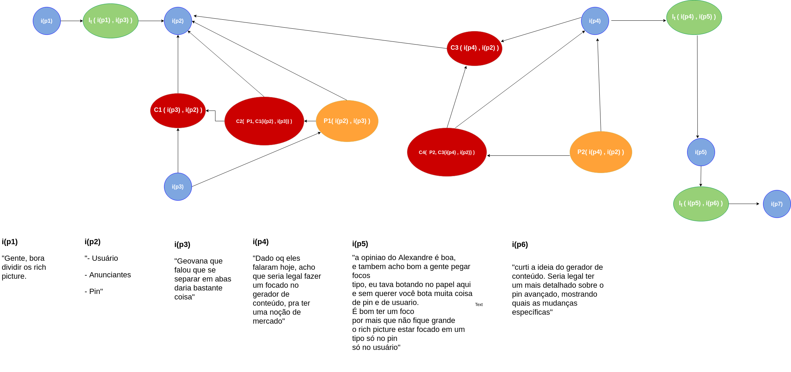

Argumentação
Introdução
A argumentação também é uma técnica usada na pré rastreabilidade, mas ao contrário do rich picture é um artefato formal. Seu principal objetivo é ajudar na resolução de conflitos entre vários argumentos usando uma visão mais técnica, a fim de buscar uma conclusão plausível para pontos de vista diferentes.
Argumentação 1

Argumentação 2

Argumentação 3

Argumentação 4

Argumentação 5

Argumentação 6